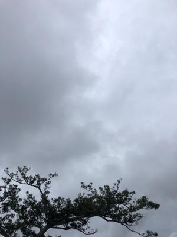
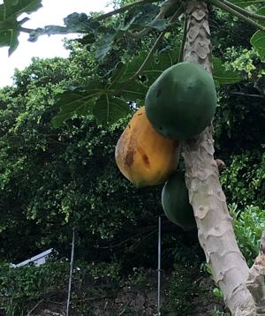

うるがいの話 ある日
最新: 熟れたパパイヤ【うるがいの話 ある日】とは 一日だけのプログです
『うるがいの話』の最新一日だけのプログで、通信料が少なく経済的だ。カニの画像をクリックすると全ての日付が載る『うるがいの話』サイトを表示します
|
|
【うるがいの話】 うるがい(ｳﾙｶﾞｲ urugai)とは、『もずくがに』の名前でとても大きくなります。 |
|---|---|
|
|
【カミマヤーの話】 猫のことを方言でマヤーといいます。カミマヤー（kamimayaa）とは、神の猫のことです。 |
|
【たながぁの音楽】 たながぁ（ﾀﾅｶﾞｰtanagaa）とは手長えびのことで、何種類かあり大きいのは車 エビぐらいになります。 |

|
【ぶながぁの話】 ぶながー(bunagaa)とは、赤い髪の毛、赤い身体、そして身長は１ｍ２０ｃｍ ぐらい、川の蟹を食べているの目撃された。場所は沖縄県国頭郡大宜味村のと ある村僕の隣近所に住んでいる爺さんから、聞いた話です。 |
|
|
【ギーマの話】 ギーマ(giima)とは、山原の里山に咲くスズランに似た、 花を付けます。実は食べられます、 気が付くと口の周りが紫になっています。 |
2022年05月08日 (日）熟れたパパイヤ
17:37
 
ジョギングの途中、熟れたパパイヤの写真を撮る。小学校の頃、妹達を連れて
近所の屋敷にある熟れたパパイヤを、一言断り物干し竿で落として食べたこと
を思い出す。果物パパイヤほど甘くはないが、そもそもお菓子もないのでそれ
なりに『おやつ』になるのである。本土復帰の番組が近頃よく放送されるがソ
テツ地獄の話題がでる。親戚のハルおばーはバーキに一杯、ソテツの実を採っ
てきて、それからでんぷんを採るために庭にムシロを敷き、天日干ししていた
。という話をしたら、ヨメはガールスカウトでソテツの実を生で食べてしまい
夜まではいた経験があると話した（おバカである）。その時、両親は病院へ連
れて行くこともなく放置されたので恨んでいたと、ポロリと呟いた。そういう
ことってズート残るのである。
１７時３１分 ビットコインの総資産 ￥１３、０７８↓